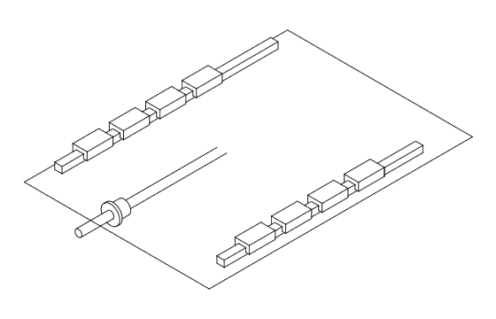

1、请选择型号：
2、请选择使用状态：
3、请选择使用导轨根数，滑块数：
LSD15 LSD20 LSD25 LSD30 LSD35
水平使用 直立使用 挂壁使用
1根导轨，1个滑块 1根导轨，2个滑块 1根导轨，3个滑块 1根导轨，4个滑块 2根平行导轨，每根导轨1个滑块 2根平行导轨，每根导轨2个滑块 2根平行导轨，每根导轨3个滑块 2根平行导轨，每根导轨4个滑块
2、使用状态：

3、使用导轨根数，滑块数：